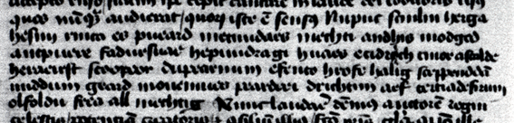

f. 72v, line 2

1[ Approx. 38 characters omitted ] Nupuc[2] scııılııı[3] herga|
hesııı rıııca es[4] pueard 2ıııetııııdaes ıııechtı andhıs ıııodged|
aııc3puere fadursuae hepuııdragı huaes 4ecıdro⁁\ı/ch tııı[5]or astalde|
5heraeırst scoopeor dupearıııım 6efento hrofe halıg sceppend7dā|
mıddum geard moııeıııııes[6] peard8eeı[7] drıchtıııı aef tertıade9fırıııı|
olfoldu frea all ıııechtıg[8] [ Approx. 31 characters omitted ]
[1]A number of small variations in the transcription of manuscript word division and spacing between the current transcription and Wuest 1906 have not been noted.
[2]puc] pue Wuest 1906; Dobbie 1937. The top stroke of <e> is generally detached from the left minim in this manuscript, suggesting the form here is a <c>.
[3]scııılııı] Dobbie 1937 reads sciulun; Wuest 1906 reads scuilun. There is no obvious distinction between any of the minims in this form.
[4]hesııı rıııca es] hefun rınca es Wuest 1906; Dobbie 1937. Other examples of <f> in the work of this scribe have a prominent cross-stroke (cf. scııılııı against especially fadur).
[5]dro⁁\ı/ch tııı] <ı> written above <o> which has been deleted using a diagonal line. A caret is directly below the <o>.
[6]moııeıııııes] moncınnes, Wuest 1906. The top stroke of <e> is generally detached from the left minim in this manuscript.
[7]eeı] ecı, Wuest 1906. The first two letters of this word are the same.
[8]all ıııechtıg] Dobbie 1937 reads a point after this word.
(Image © Bibliothèque Nationale du France. Reproduced with permission)
{kind=link}